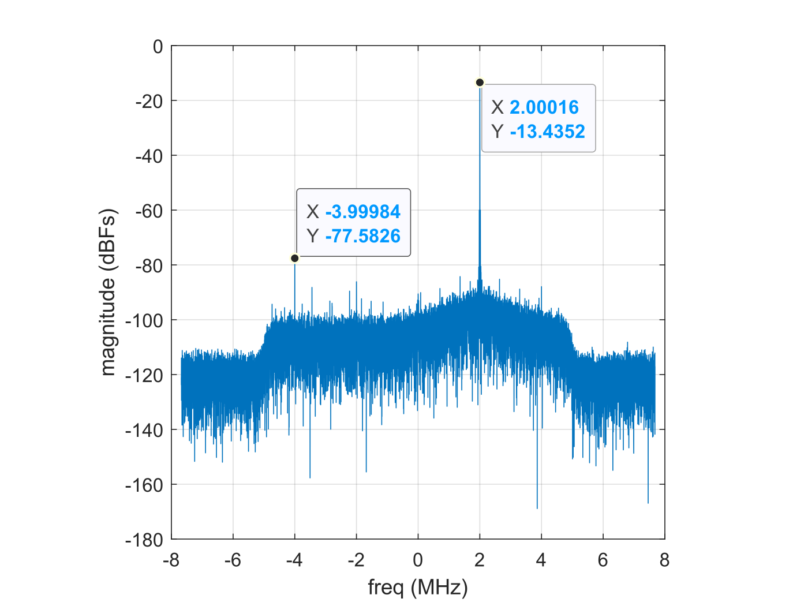

A number of tests that genalyzer supports assume that the waveform that is analyzed contain one tone or two tones. genalyzer does not support analysis of generic waveforms, which can be decomposed into multiple tone frequencies. In this section, a demonstration of single-tone based measurements supported by genalyzer are described. MATLAB and Python bindings are used to describe the results using the computed FFT and its analysis. First a brief overview of configuring ADALM-PLUTO is shown. For more details, see this page on streaming samples from a supported device using ADI Transceiver Toolbox for MATLAB and this page for the corresponding details when using PyADI-IIO.
Configuring ADALM-PLUTO for Tone-Based Measurement in RF Loopback
An ADALM-PLUTO is connected in RF loopback and is configured to transmit a 2 MHz complex tone, with the sample rate set to 15.36 MSPS.
MATLAB
The MATLAB and Python code snippets are shown below.
%% Tx set up
tx = adi.Pluto.Tx;
tx.uri = 'ip:pluto';
tx.DataSource = 'DDS';
tx.DDSFrequencies = [2e6 2e6; 0 0]; % set DDS complex tone freq to 2 MHz
tx.DDSPhases = [90e3 0; 0 0]; % expressed in millidegrees
tx.DDSScales = [1 1; 0 0];
tx.CenterFrequency = 2.4e9;
tx.EnableCustomFilter = true;
tx.CustomFilterFileName = 'LTE10_MHz.ftr'; % sets PlutoSDR sample-rate to 15.36 MSPS
tx.AttenuationChannel0 = -10;
tx();
pause(1);
%% Rx set up
rx = adi.Pluto.Rx('uri','ip:pluto');
rx.CenterFrequency = tx.CenterFrequency;
rx.EnableCustomFilter = true;
rx.CustomFilterFileName = 'LTE10_MHz.ftr';
rx.GainControlModeChannel0 = 'fast_attack';
y = rx();
y_re = real(y);
y_im = imag(y);
tx.release();
rx.release();
# Create radio
sdr = adi.Pluto()
# Configure properties
sdr.rx_lo = 2400000000
sdr.tx_lo = 2400000000
sdr.tx_cyclic_buffer = True
sdr.tx_hardwaregain_chan0 = -10
sdr.gain_control_mode_chan0 = "fast_attack"
sdr.filter = "LTE10_MHz.ftr"
fs = int(sdr.sample_rate)
tone_freq_hz = 2000000 # In Hz
tone_scale = 1.0 # Range: 0-1.0
tx_channel = 0 # Starts at 0
sdr.dds_single_tone(tone_freq_hz, tone_scale, tx_channel)
# Collect data
x = sdr.rx()
Using genalyzer and ADALM-PLUTO to Compute Tone-Based Measurements for ADALM-PLUTO in RF Loopback
In this section, an example on how to use genalyzer for calculating Spurious free dynamic range (SFDR) is provided. Doc in progress.
Spurious free dynamic range (SFDR) specifies the capability of the ADC and the system to decipher a carrier signal from other noise or any other spurious frequency. It represents the smallest power signal that can be distinguished from a large interfering signal. Mathematically, it is the ratio between the root mean square (rms) value of the power of a carrier and the rms value of the next most significant spurious signal seen in the frequency domain, such as in a fast Fourier transform (FFT). Hence, by definition, this dynamic range must be free of other spurious frequencies, or spurs.
SFDR is quantified as the range, in units of power (dBc), relative from the carrier of interest to the power of the next most significant frequency. However, it also could be referenced to a full-scale signal in units of power (dBFS). This is an important distinction since the carrier of interest may be a relatively lower power signal that is well below the full-scale input to the ADC. When this is the case, the SFDR becomes paramount in distinguishing the signal from other noise and spurious frequencies.
A harmonic frequency is an integer multiple of the fundamental frequency. Hence, the SFDR typically will be dominated by the dynamic range between a carrier frequency and the second or third harmonic of the fundamental frequency of interest.
In this example, these ideas are demonstrated by using MATLAB's calllib interface to genalyzer. A link to the complete MATLAB script is shown at the bottom of this page.
The first step is to create an opaque configuration struct. Using MATLAB and Python bindings, this is done as shown by the code snippet below.
% measurement settings
domain = 0; % 0 - TIME; 1 - FREQ
type = 2;
nfft = length(y);
navg = 1;
fs = 15.36e6;
fsr = 0;
res = 12;
window = 1; % 0 - BlackmanHarris, 1 - Hann, 2 - Rect
% setup measurement for time-domain measurement
c = libpointer; % create a null pointer
calllib('libgenalyzer', 'gn_config_tone_meas', ...
c, domain, type, nfft, navg, fs, fsr, res, window, false, false, false);
# setup measurement
inputs = dict()
inputs["domain_wf"] = 0
inputs["type_wf"] = 2
inputs["nfft"] = len(x)
inputs["navg"] = 1
inputs["fs"] = fs
inputs["fsr"] = 0
inputs["res"] = 12
inputs["win"] = 1
inputs["freq"] = [0]
inputs["phase"] = [0]
inputs["scale"] = [0]
config_obj = genalyzer.gn_params(**inputs)
c = genalyzer.config_tone_meas(config_obj)
Now, the configuration struct contains the measurement settings in order to calculate the desired metric. SFDR calculation is done as shown in the following code snippets.
% calculating SFDR using the time-domain waveform
err_code = libpointer('uint32Ptr',0);
fft_len = libpointer('uint64Ptr',0);
metric = char('SFDR');
fft_time_re = libpointer('doublePtrPtr', zeros(nfft, 1));
fft_time_im = libpointer('doublePtrPtr', zeros(nfft, 1));
y_interleaved = [y_re'; y_im'];
y_interleaved = y_interleaved(:);
y_interleavedPtr = libpointer('int32Ptr', y_interleaved);
sfdr_time = calllib('libgenalyzer', 'gn_metric', c, y_interleavedPtr, metric, fft_time_re, fft_time_im, fft_len, err_code);
# compute SFDR
result, fft_i, fft_q, err_code = genalyzer.metric_t(c, x_intrlv, "SFDR")
Note that the FFT calculated for analysis and computing the desired metric is returned by genalyzer. Plotting the FFT computed using genalyzer, we can see that the second harmonic at 4 MHz and its image dominate the remaining spurs. Note that the third harmonic and its image are filtered out by the programmable filter coefficients loaded into ADALM-PLUTO.

Since SFDR is by definition, free of spurious frequencies, by examining the above plot, one can estimate SFDR to be around 50 dBc. This values agrees with the SFDR computed by genalyzer.
SFDR (time) - 49.742253
Note that genalyzer can be configured to compute performance metrics from frequency-domain data as well. In other words, genalyzer can be configured to skip the FFT computation step and only perform analysis of the FFT provided as input. Note that passing a 1 instead of a 0 to the domain argument controls this configuration. This is shown by the MATLAB code snippet below. The same can be accomplished using Python bindings as well.
% setup measurement for freq-domain measurement
c = libpointer;
domain = 1; % 0 - TIME; 1 - FREQ
calllib('libgenalyzer', 'gn_config_tone_meas', ...
c, domain, type, nfft, navg, fs, fsr, res, window, false, false, false);
% calculating SFDR using the FFT calculated from time-domain waveform
err_code = libpointer('uint32Ptr',0);
fft_len = libpointer('uint64Ptr',0);
fft_y = fft(hann(length(y)).*y);
ffty_interleaved = [real(fft_y)'; imag(fft_y).'];
ffty_interleaved = ffty_interleaved(:);
ffty_interleavedPtr = libpointer('doublePtr', ffty_interleaved);
fft_freq_re = libpointer('doublePtrPtr', zeros(nfft, 1));
fft_freq_im = libpointer('doublePtrPtr', zeros(nfft, 1));
sfdr_freq = calllib('libgenalyzer', 'gn_metric', c, ffty_interleavedPtr, metric, fft_freq_re, fft_freq_im, fft_len, err_code);
# update domain
inputs["domain_wf"] = 1
config_obj = genalyzer.gn_params(**inputs)
c = genalyzer.config_tone_meas(config_obj)
# compute SFDR
result, fft_i, fft_q, err_code = genalyzer.metric_t(c, x_intrlv, "SFDR")
The calculated SFDR matches the corresponding result obtained using time-domain waveform closely.
SFDR (freq) - 49.742421
Similarly, Signal-to-Noise-and-Distortion (SINAD, or S/(N + D) is the ratio of the rms signal amplitude to the mean value of the root-sum-square (RSS) of all other spectral components, including harmonics, but excluding DC. SINAD is a therefore, an indicator of the overall dynamic performance of an ADC because it includes all components which make up noise and distortion. To compute SINAD, only the